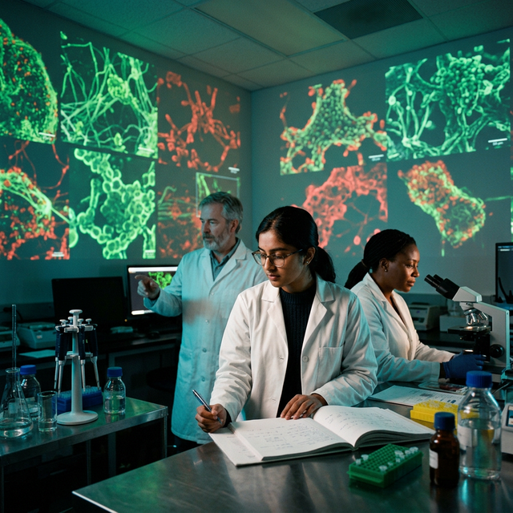
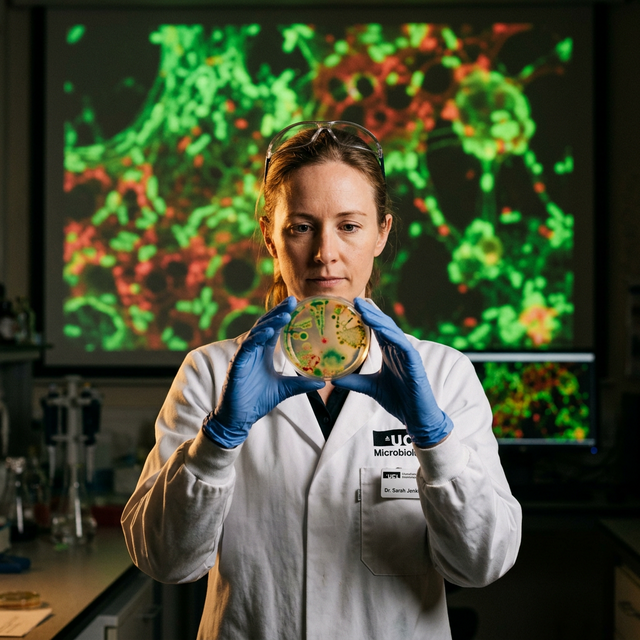
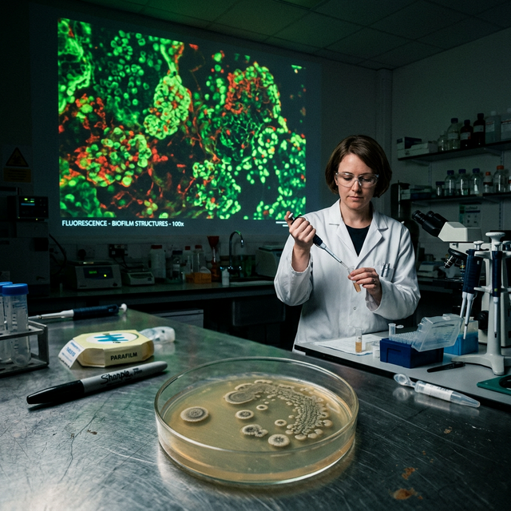
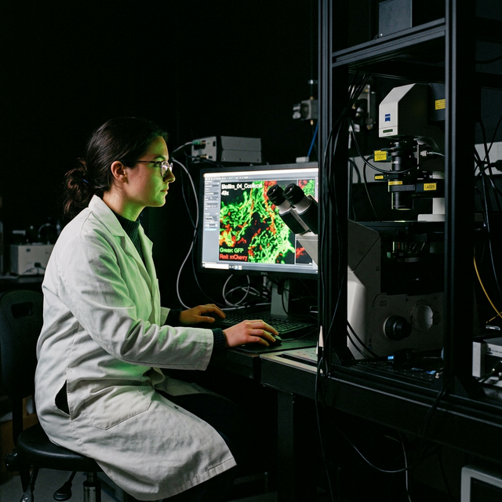
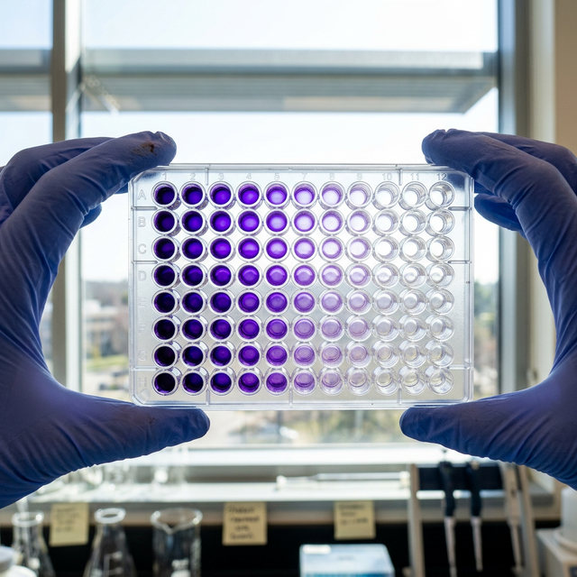
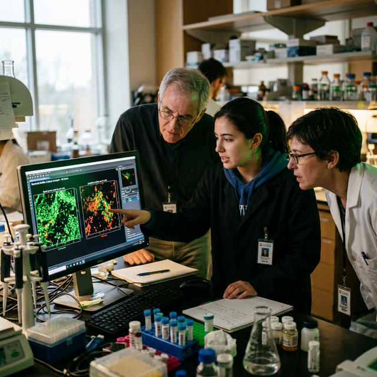
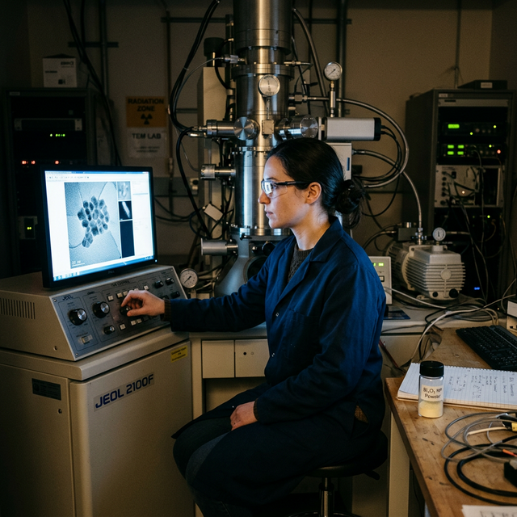
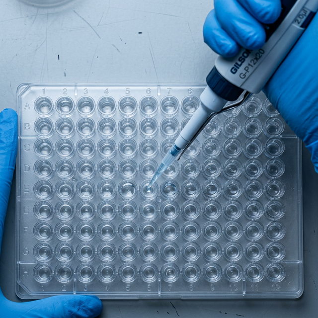
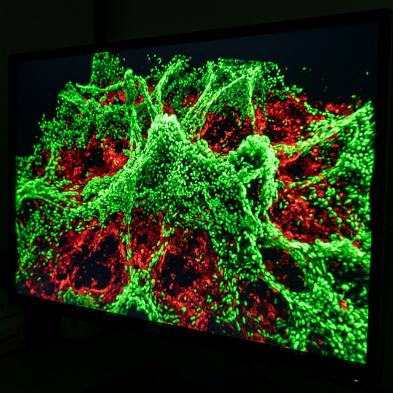

About the Research
§ 01The Problem
Bacteria don't exist as lone cells in most infections. They build biofilms — structured communities embedded in a self-produced protective matrix of proteins, extracellular DNA, and polysaccharides. This matrix is a biological fortress: antibiotics struggle to penetrate it, and bacteria inside exist in a metabolically dormant state that makes killing them even harder.
Biofilm infections persist on medical implants, in chronic wounds, and in the lungs of cystic fibrosis patients. They are often functionally incurable with standard treatment.
The Discovery
The graduate student at the center of this project has demonstrated that bismuth trioxide (Bi₂O₃) nanoparticles can penetrate the biofilm matrix and eradicate mature biofilms — not just prevent their formation, which is the easier problem and where most prior research stops.
The mechanism involves generating reactive oxygen species (ROS) that overwhelm bacterial defenses at the nanoscale, while the nanoparticles physically disrupt the biofilm architecture itself. The complementary fluorescence microscopy images show this destruction in vivid, graphic detail.
Why This Collaboration Matters
Prof. Huang's group brings the chemistry — nanoparticle synthesis, characterization, mechanism. Dr. Min-Ho Kim's group brings the microbiology — biofilm culture, infection models, fluorescence imaging. The combination means two distinct lab environments, two visual vocabularies, and a story that spans from the molecular to the human scale. This is a photographically rich interdisciplinary project.
Scientific Workflow
§ 02Nanoparticle Synthesis — Huang Lab
Bi₂O₃ nanoparticles synthesized via chemical precipitation or hydrothermal methods. The powder is pale yellow-white — visually subtle, but the scale is 1–100 nanometers. Characterization via TEM (transmission electron microscopy), DLS (dynamic light scattering for particle size), and zeta potential measurements for surface charge.
Biofilm Growth — Min-Ho Lab
Bacteria are seeded into multi-well plates or flow cells and incubated 24–72 hours to form mature biofilms. The well plates are clear plastic with pink/cloudy growth media — unremarkable at first glance, but held to a light source, they reveal biomass distribution patterns. Crystal violet staining (a standard biofilm assay) turns wells a vivid deep purple, intensity proportional to biofilm mass.
Treatment Application
Nanoparticle suspensions are added to the mature biofilm wells at controlled concentrations. Treatment runs over hours — precise pipetting, timing, meticulous documentation. This is where the graduate student's hands are most visible in the actual work.
Fluorescence Microscopy — The Spectacular Phase
Biofilms are stained with LIVE/DEAD fluorescent dyes: SYTO 9 turns live bacteria green, propidium iodide turns dead bacteria red. Samples go under a confocal laser scanning microscope (CLSM). The researcher navigates through z-stacks of the biofilm — essentially flying through a 3D microbial city in a darkened room, the monitor their only light. The destruction images show green architecture collapsing into red.
Data Analysis & Interpretation
Software (ImageJ, COMSTAT) processes confocal z-stacks into quantitative data: biofilm thickness, live/dead ratios, surface coverage. Often involves the graduate student and one or both faculty gathered around a monitor reviewing results — a natural unposed moment of collaborative discovery.
Shot Concepts
§ 03Posed / Environmental Portraits
Complete darkness. The fluorescence microscopy images — projected large — become the only light source illuminating the three scientists. This isn't a concept about putting a screen behind people. It's about letting the discovery itself be the painter of light.
- Subjects positioned at 45° to projection wall — not flat-on, which reads as "standing in front of a TV"
- Choose a fluorescence frame with strong color range — the red/green LIVE/DEAD palette is ideal
- The colored light should spill onto lab coats and faces — intentional contamination, not accident
- Graduate student forward and slightly below faculty — depth and hierarchy without formality
- Consider Rami's plexiglass technique: glass panel between subjects and wall creates reflection layers
Technical Notes
Setup Diagram — Top-down Floor Plan

AI Visualization Prompt — Nano Banana 2
Rather than a single screen behind the subjects, use two or three overlapping projected panels of fluorescence imagery — or project across a wide curved surface — so the biofilm destruction imagery seems to surround the team. Side lighting added to maintain facial dimension.
- Wide projection surface minimum 10–12 ft
- Subjects at varying depths — grad student nearest camera, faculty flanking behind
- One edge-lit key light to maintain face separation from background
- Allow projection to spill onto coats and faces — intentional, not corrected
- Plexiglass panel optional for reflection layering effect
Technical Notes
Setup Diagram — Top-down Floor Plan

AI Visualization Prompt — Nano Banana 2
A compositional tension between human scale and microscopic scale. The graduate student holds a petri dish, flask, or glass slide at center frame — sharp, lit, tangible. Behind them, a projection of the fluorescence destruction image runs slightly out of focus, enormous relative to the subject in hand.
- Graduate student centered, holding research material (dish, slide, or sample vial)
- Physical lab material sharp and lit — it is the anchor of the frame
- Background projection intentionally soft at f/2.0–2.8
- Optionally: crystal violet-stained well plate as the foreground element — vivid purple, scientifically precise
- The two scales tell the full story without a caption
Technical Notes
Setup Diagram — Side Elevation / Depth View

AI Visualization Prompt — Nano Banana 2
Inspired by the Marcus Lehto portrait technique — use a split diopter or near/far composition to hold three planes simultaneously in focus: a research element sharp in the extreme foreground, scientists in the middle distance, fluorescence imagery in the far background. The audience looks through the science to reach the scientist.
- Extreme foreground: microscope slide, petri dish, or sample vial — 12–18" from lens
- Middle ground: one or two scientists, 6–8 ft from camera
- Background: projected or printed fluorescence image, 14–20 ft back
- Split diopter adapter allows simultaneous near/far focus without stopping down
- Also achievable at f/11–16 with adequate lighting
Technical Notes
Setup Diagram — Three Focal Planes (Side View)

AI Visualization Prompt — Nano Banana 2
Documentary Moments
During fluorescence microscopy, the researcher works in a nearly dark room, navigating z-stacks of the biofilm on a glowing monitor. Their face is illuminated only by the vivid green and red fluorescence imagery. This is the organic version of Concept A — it happens during real work, not in a posed session.
- The confocal microscope is a complex, expensive, visually impressive instrument
- Shoot from the side — show the instrument, the screen, and the face simultaneously
- A tight frame on just the face and screen is also a standalone strong image
- Coordinate the shoot during an actual microscopy session — real data, real engagement
- The monitor angle relative to the subject's face determines whether you get dramatic or flat light
Technical Notes
Setup Diagram — Side View, Confocal Room

AI Visualization Prompt — Nano Banana 2
Crystal violet staining is the standard quantitative biofilm assay. After treatment, the wells are stained and rinsed — the remaining purple intensity directly corresponds to remaining biofilm mass. Untreated wells are dense purple. Nanoparticle-treated wells are near-clear. This gradient is visually striking, scientifically precise, and tells the entire treatment story in one image.
- Hold the 96-well plate up to a window or light box — backlit, the purple translucency reveals the gradient
- Gloved hands in frame anchor it as active science — otherwise it reads as product photography
- High-contrast backlight (daylight from window or LED lightbox) makes the colors pop
- Can also shoot top-down on a light table — graphic, flat, pure color
- Potentially a UPAA single-image winner on its own merit
Technical Notes
Setup Diagram — Object Photography, Two Angles

AI Visualization Prompt — Nano Banana 2
After microscopy sessions, the graduate student and one or both faculty review confocal z-stack data together at a workstation. This is a natural three-person composition with genuine intellectual engagement — no posing needed. The confocal images on screen provide ambient color in an otherwise neutral environment.
- Shoot from behind and to the side — show both faces and the monitor
- The moment one subject points at the screen is the frame you want
- Window light or overheads are fine — this is a straightforward environmental shot
- Compression: 85–135mm to collapse the depth between subjects and screen
- Works as a horizontal (editorial spread) or vertical (portrait orientation)
Technical Notes
Setup Diagram — Top-down, Workstation Review

AI Visualization Prompt — Nano Banana 2
Prof. Huang's lab synthesizes and characterizes the Bi₂O₃ nanoparticles. The characterization instruments — transmission electron microscope (TEM), dynamic light scattering (DLS) — are visually complex, technically beautiful pieces of equipment. This is a different visual register than the fluorescence work: colder, more precise, the chemistry side of the story.
- TEM environments feature a large vacuum column and glowing screens — strong visual geometry
- DLS instruments are smaller but involve laser light and sample vials — photographically rich
- Show the synthesized powder in a small sample vial or synthesis flask — the unremarkable pale yellow that operates at billionths-of-a-meter scale
- Huang or the grad student working at the instrument provides scale and human element
Technical Notes
Instrument Context Diagram

AI Visualization Prompt — Nano Banana 2
Unglamorous but powerful. Gloved hands, micropipette, rows of well plates. This is the image that says "this is the actual work" — the labor behind discovery. Strong overhead or backlight transforms a mundane bench moment into a graphic composition. This kind of image complements the posed environmental portrait by showing the human cost of discovery in time and precision.
- Overhead lighting from lab fluorescents or a small LED panel creates clean shadows
- Tight frame — hands, pipette tip, and plate only. Exclude distracting background
- The nanoparticle treatment step is the specific moment: pipette dispensing into biofilm-seeded wells
- Top-down orientation works well graphically — rows of wells create strong pattern
- Shoot wide aperture to isolate the pipette tip against soft well plate background
Technical Notes
Framing Diagram — Top-down Bench View

AI Visualization Prompt — Nano Banana 2
A tight frame on the confocal microscope monitor showing the LIVE/DEAD fluorescence images — no human subject, no scientist, no lab equipment. Pure science. This is a companion image that runs alongside the portrait series and provides visual variety in editorial layouts. The green biofilm architecture collapsing into red tells the entire story of the discovery without a single word.
- Frame only the monitor — exclude bezel, frame edges, and surrounding hardware
- Request the most visually striking frame from the grad student's confocal data
- Shoot at a slight angle to avoid reflections on the glass screen surface
- Optionally: a 3D z-stack volume render is even more visually complex
- This image pairs naturally as a diptych with any of the portrait concepts
Technical Notes
Frame Reference
